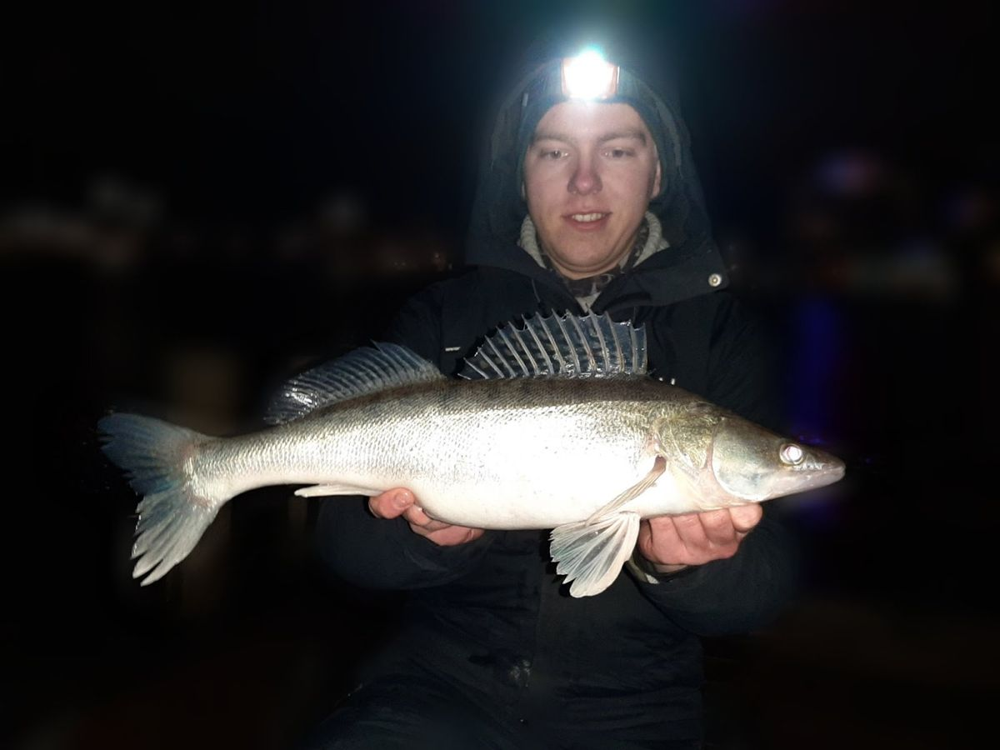
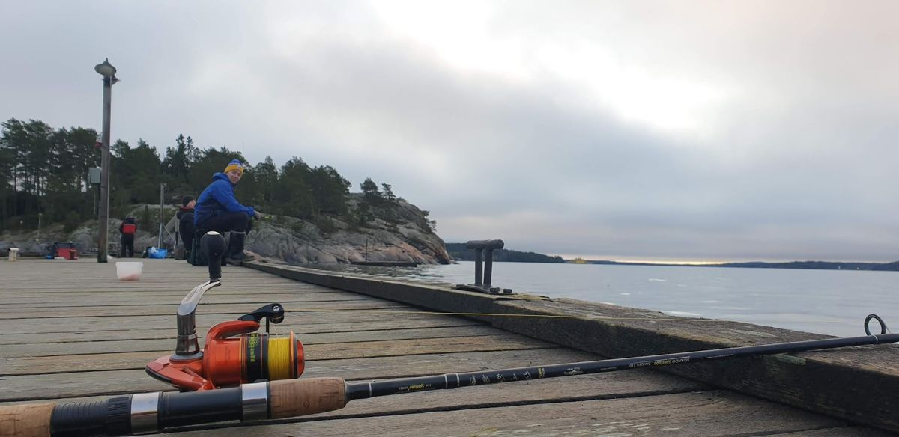
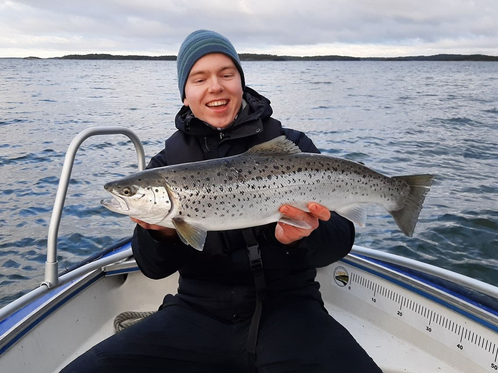

Blogitekstit · Tammikuu 2020
Tammikuun yhteenveto - Fongareilla huikea tammikuu!
Kaupallinen yhteistyö Paitakulman kanssa.

Tammikuusta ei jää paljoa omalta kohdalta jälkipolville kerrottavaa. Kalastustunteja kertyi vajaat 32 tuntia ja sillä saatiin lajeja nousemaan kuusi. Kolmipiikki, kuore, ahven, särki, kymmenpiikki ja made pääsivät tammikuun lajilistalleni.
Lajia Per Reissu (LPR) lukema tasan 1, tehokkuus 91,67 ja Suomen ennätyksestä saavutettu 11%.
Tähän kerrottakoot, että lasken kalastustunnit kodista lähtemisen ja kotiin paluun välisen ajan. Todellisuudessa varsinaisia kalanpyyntitunteja on huomattavasti vähemmän kuin mitä edellä mainittu.
Vuoden ensiaskeleet tallusteltiin Timi Laitisen kanssa Helsingin Vuosaaren rannoilla, vmäisiä kolmipiikkejä kiusaillen.
Tammikuun voisi kiteyttää tähän kommenttiin, jonka laitoin tammikuun alkupuolella Skes ry:n puheenjohtaja Jukka Haloselle, kun hän kysyi olenko menossa kalalle viikonloppuna.
"Ei oo reilua syödä yhteisestä kassasta omiin menoihin kokoajan, kun niitä voi siirtää myöhemmäksi. Eli turhat reissut pois ja odottaa parasta aikaa. Eli ei kiirus."
Tammikuun retkistä pisin suuntautui Airiston kautta Padvan niemelle Justus Kamppisen, Timin ja isäni Matin kanssa. Lajeja reissulta kertyi "huimat" neljä kappaletta. Retki täynnä pummeja, tarinan voi lukasta tästä.


Upeaa on seurata Miika Kovasen, Juuso Triipposen ja Justuksen tekemistä tammikuussa ja koko kuluvan vuoden. Miikalla 15 lajia tammikuulle ylittää Mikael Jaakkolan pyytämän 12 lajia vuonna 2018 lajimäärän kolmella lajilla. Mikaelin blogista voit lukea hänen ennätysvuotensa tammikuun kalareissut ja koko vuoden urakan kuukausi kerrallaan. Tutustu blogiin tästä.


"Erikoinen tammikuu. Kalastusta tunneissa tavallista enemmän, mutta täysin poikkeavaa kalastusta aiempiin vuosiin nähden." - Miika
Miikan, Juuson ja Justuksen huimat startit ansaitsevat kaikki erikseen hatun nostot.
Miikalla lajilistalla upea joukko peruslajeja, armeijasta viikonloppulomilla Juuson tekemät rundit lajien kuha, kampela, piikkikampela, made ja kruununa taimen lupaa hänelle hyvää kuluvalle vuodelle. Ehdottomasti alkuvuoden upein lajilista tammikuun osalta.


"Oon kyllä älyttömän tyytyväinen tähän mennessä. Oikeastaan tähän talvikaudelle ei oo enää juuri muuta tavoitetta kuin muikku ja härkäsimppu. Jäät saisi tulla seuraavaksi!" - Juuso
Justus vetäisi Kotkasta tammikuussa piikkimonnin listalleen ja muutenkin lajilistoilla komeilee kesälle tyypillisiä lajeja mm. turpia ja seipiä. Tammikuun huippuna hänelle uusiksi elämäpisteiksi Kymijoen Korkeankoskelta pyydetyt 4,8 kg painut lohi ja reilun kilon made.
Onnea elämänpisteestä Justus! Kysyin kalamieheltä fiiliksiä tuoreeltaan uudesta elämänpisteestä.
Lyhyimmillään sanottuna aivan mahtavat! - Justus
Omista retkistä tammikuun toinen pidempi lirkkireissu suuntautui Olli-Pekan kanssa Lauttasaareen etsimään kampeloita ja muita yölajeja.
Keli oli kuin unelma, ainoat pienet tuulahdukset ja aallot veteen muodostuivat kauempaa kulkevista laivoista. Muutan täys pläkä! Reissu meinasi saada karun päätöksen, kun liukastuin rantakalliolla.
Mitään ei onneksi mennyt rikki. Kävin lääkärissä viikko kaatumisen jälkeen, jossa selvisi olkapääni nyrjähtäneen. Vähällä päästiin onneksi.

Made nousi tammikuun ja vuoden kuudenneksi lajiksi Mustijoelta. Tuosta retkestä kirjoitettu blogipostaus löytyy tästä.
Tammikuun retkistatistiikka
- lajeja kasassa 6 | reissuja 6 | tunteja 31,85 | kilometrejä 617
Helmikuulle siirrytään lajimäärälistalla seuraavassa tilanteessa
(2018/2019 vs 2020)
Facebookin Lajikalastus 2020 listaus
15 lajia, Miika Kovanen
13 lajia, Juuso Triipponen
11 lajia, Justus Kamppinen
6 lajia, Juha Salonen
6 lajia, Joonas Orupold
6 lajia, Ari Meskanen
6 lajia, Vili Lillman
5 lajia, Wesa Karsikas
5 lajia, Henri Lillman
5 lajia, Olli Salonen
2 lajia, Venla Lillman
2 lajia, Niko Huovila
2 lajia, Vesa Sivonen
Lajilista tammikuu 2020
"Mä joka kerta kurkkaan taulukon ja katson oletko saanut uusia lajeja." -Jussi
Näin meillä töissä, keittiön seinällä on 49 tyhjää ruutua joistä vähintään 48 pitäisi vielä täyttää. Työkaverini saavat toistaiseksi ihailla niitä muutamaa kalakuvaa jotka listasta löytyy.
Seuraavaksi vuorossa helmikuu ja alkuvuoden pisin retki Kokkolan kautta Lapinlahdelle, päätavoitteena muikku sekä ankerias. Nämä reissut pohjustettiin Timin ennätysvuonna 2018 sekä vuonna 2014.

Tämän vuoden retkelle on lähdössä kyydissäni kovista fongareista Miika, Petri Ristola Kotkasta, sekä Timi.
Toisessa autokunnassa Turusta lähtee Petri Tynkkynen poikansa Villen kanssa ja meidän uusina tuttavuuksina muutama uusi fongari stadista. Kuopiosta tulevat Matti Kimonen kalakaverinsa kanssa ja Timo Räsänen sekä paikallisoppaamme Lapinlahdelta Miikka Nyman.
Tarinat voit lukea alla olevista linkeistä.
- Muikkujahdissa Kokkolassa - vinkit muikun pilkintään
- Jarin kanssa kalassa feat Fongarit (Lapinlahti / ankerias)
Ankeriaan talvikalastuksesta voi nauttia myös Urpoerämies Production Oy:n videolla.
Taakse jää vaiherikas ja upea tammikuu vuodelta 2020. Tervetuloa helmikuu ja uudet kalaretket!
Seuraa ennätyksen etenemistä
Pidän kirjaa lajilistasta ja tarkemmasta retkidatasta Google -taulukossa, joka löytyy jokaisesta ennätysyrityksen postauksesta. Tästä linkistä taulukko avautuu uuteen ikkunaan.
Seurantatilanne löytyy myös blogini oikeasta yläreunasta.
Vuoden aikana ennätysyrityksessä kulkee mukaan myös tämä kalataitelija-graaffikko Sakke Yrjölän suunnittelema SPECIES FIN 53 -merkki.
Paitakulmassa painatin pipoon ja lippikseen saman merkin. Tavoitteeni on saada aikaiseksi 53 saaliskuvaa tekstin alussa tekemääni taulukkoon joissa kaikissa kuvissa näkyisi tuo kyseinen tunnus.
Paitakulma on Suomalainen perheyritys, joka haluaa panostaa laatuun ja asiakastyytyväisyyteen. Tutustu yrityksen palveluihin tästä.
2020 Justus Kamppinen Juuso Triipponen Korkeakoski lohi Miika Kovanen Miika Nyman SpeciesFIN53 Timi Laitinen Urpoerämies Production Oy yhteenveto 2020